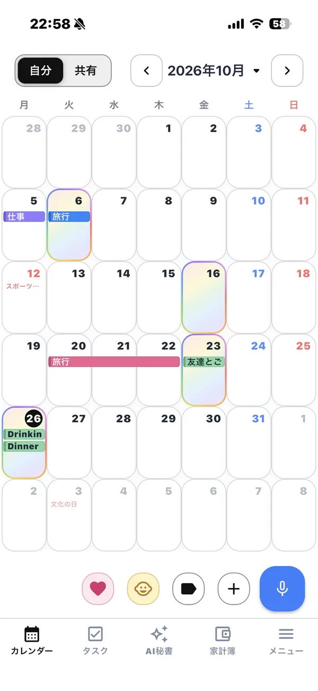

カレンダーアプリの選び方
目的別・失敗しないポイント
カレンダーアプリはたくさんあって、どれを選べばいいか迷いがちです。この記事では「何を基準に選ぶか」を目的別に整理します。
この記事は、カレンダーアプリ「フルカレ」の運営者が書いています。フルカレ以外のアプリも含めて、選ぶときの考え方を紹介します。
まず決めたい：カレンダーアプリで何をしたいか
カレンダーアプリ選びで失敗する一番の原因は、「人気だから」で選んで、自分の使い方に合わないことです。まず、次のどれが一番大事かを考えてみてください。
| やりたいこと | 重視するポイント |
|---|---|
| 予定をとにかく手早く入れたい | 入力のしやすさ（音声入力・自然な文章での入力） |
| 家族・夫婦・カップルで予定を合わせたい | 共有カレンダー、追加時の通知、OSをまたいで使えるか |
| 仕事の予定を管理したい | 会社のアカウントとの同期、ほかのツールとの連携 |
| 予定以外の記録もまとめたい | 家計簿・日記・生理・育児記録などが一緒にあるか |
| 開かずに予定を確認したい | ホーム画面・ロック画面のウィジェット |
選ぶときの5つのポイント
1. 入力がラクか
カレンダーは「入れなくなった時点で使わなくなる」道具です。日付と時刻を毎回選ぶ操作が面倒なら、音声や文章で予定を入れられるアプリを選ぶと続きます。
2. 共有のしかた
家族で使うなら、招待の手軽さ、予定が追加されたときの通知、iPhoneとAndroidが混ざっていても使えるかを確認しましょう。自分だけの予定と共有の予定を分けられるかも大事です。
3. 予定以外に何を記録したいか
家計簿、日記、生理日、子どもの記録などを別々のアプリで管理していると、開くアプリが増えて続かなくなりがちです。1つのアプリにまとめられるかどうかで、続けやすさが変わります。
4. 見やすさ・ウィジェット
月表示で予定がどれくらい読めるか、色分けやスタンプで区別できるか、ホーム画面のウィジェットで今日の予定が見られるかもチェックポイントです。
5. 料金と広告
無料で使える範囲と、有料プランで何が増えるかを確認しましょう。広告が気になる人は、広告を消す料金も見ておくと安心です。
タイプ別：どんなアプリが向いているか
スマホ標準・大手のカレンダーが向いている人
iPhoneの標準カレンダーやGoogleカレンダーは、OSやアカウントとの連携が強く、仕事の予定を会社のアカウントと同期したい人に向いています。シンプルに予定だけを管理したい人にも合っています。
共有に特化したカレンダーが向いている人
家族やグループでの予定共有がメインなら、共有カレンダーに特化したアプリが候補になります。メンバーとのやり取りや共有のしやすさを重視して選びましょう。
オールインワン型が向いている人
予定だけでなく、家計簿・日記・生理・育児など毎日の記録を1か所にまとめたい人は、オールインワン型のカレンダーアプリが向いています。
フルカレはこんな人におすすめ

フルカレは「予定入力が面倒」という悩みから作ったカレンダーアプリです。次のような人に向いています。
- 予定を話すだけで入れたい（「明日15時から歯医者」で登録）
- 家族・パートナーと予定も写真も共有したい
- 家計簿・生理予測・育児記録・日記もカレンダーにまとめたい
- ホーム画面のウィジェットで予定を確認したい
- 基本無料で使いたい（広告なしのProは月額300円）
反対に、会社のアカウントのカレンダーと同期して仕事の予定を一元管理したい人には、大手のカレンダーのほうが合っています。
よくある質問
無料で使えるカレンダーアプリはありますか？
多くのカレンダーアプリは無料で使えます。有料プランで広告が消えたり機能が増えたりするものが多いので、無料の範囲で足りるかを確認しましょう。フルカレも主な機能は無料です。
家族で共有するならどんなアプリがいいですか？
招待が簡単か、予定追加の通知があるか、iPhoneとAndroidの間でも使えるかを確認しましょう。自分の予定と共有の予定を分けられると安心です。
カレンダーと家計簿を一緒に管理できるアプリはありますか？
フルカレはカレンダーの中に家計簿があり、音声で「外食 800円 ランチ」と話すだけでも記録できます。